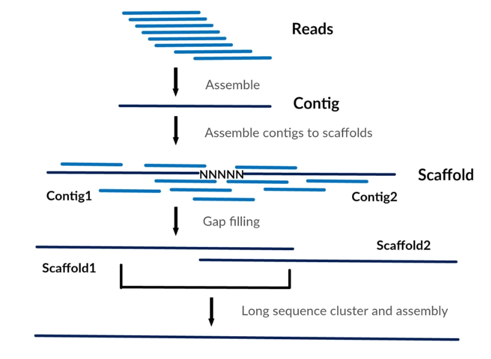
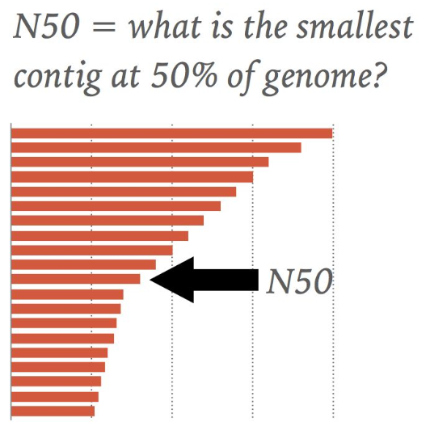
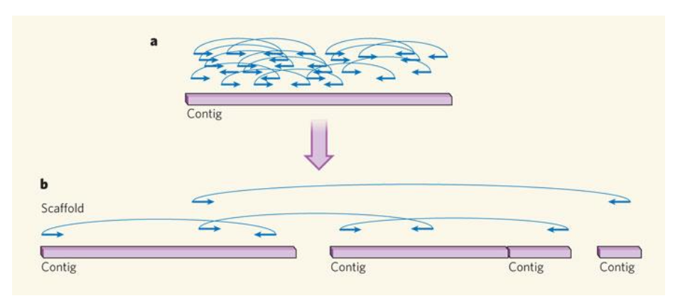
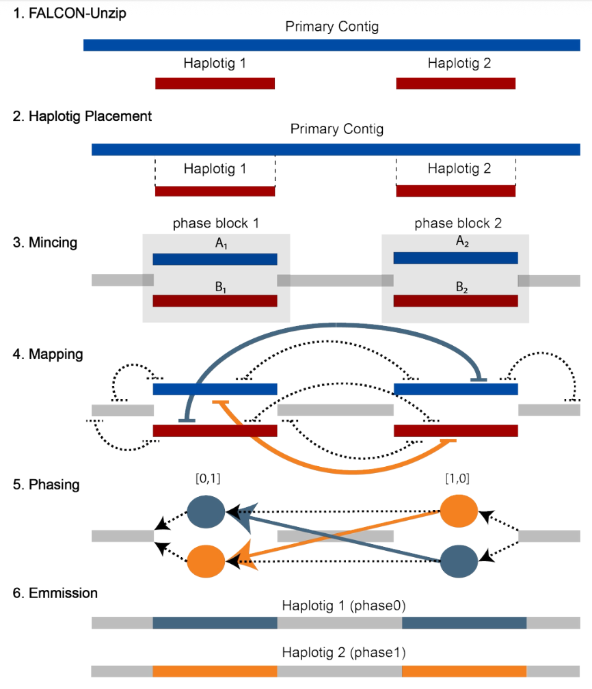

Manual
Overview of Genome Assembly
Genome assembly is the process of reconstructing an organism’s genome from millions or billions of short DNA sequences generated by sequencing technologies. Because current technologies cannot read entire chromosomes in one piece, genome assembly stitches these short reads together into longer continuous sequences that represent the genome. There are two main strategies for assembly: clone-based and whole-genome shotgun approaches. In the clone-based method, large DNA fragments are cloned, selected using genetic markers, and then sequenced individually to build the genome gradually. In contrast, the whole-genome shotgun approach involves randomly fragmenting the entire genome, sequencing all fragments, and using computational methods to assemble them into contiguous sequences. The ultimate goal is to produce an accurate, ideally complete, linear or circular representation of the genome.
When performing genome assembly, several key considerations influence the quality and accuracy of the final assembly. Sequencing coverage is critical—higher coverage improves assembly reliability and helps resolve ambiguities. However, errors in reads (particularly with long-read technologies) can complicate alignment and contig formation. Read length also plays a vital role; longer reads span repetitive regions more effectively, improving assembly continuity. The presence of repeats or non-unique regions in the genome poses major challenges, as they can lead to misassemblies or gaps. Additionally, factors like genome size, heterozygosity, and ploidy affect assembly complexity—larger or more variable genomes require more sophisticated algorithms. Finally, the computational resources—including runtime and memory usage—must be considered, especially for large or complex genomes, to ensure efficient and successful assembly.
Terminology
Read: A short DNA sequence generated by a sequencing machine. Reads are the basic input for genome assembly.
Contig: A contiguous stretch of assembled sequence formed by overlapping reads with no gaps. Represents the first level of genome assembly.
Scaffold: An ordered set of contigs that are connected by gaps (usually filled with Ns) representing unknown or unsequenced regions. Scaffolds are often built using paired-end or long-range information.
Gap (N): A placeholder for missing or unresolvable sequence in scaffolds. Represented by the letter “N” in assembled genomes.
Chromosome: A complete DNA molecule, either linear or circular, containing a portion or all of the organism’s genome. The final goal of assembly is to reconstruct chromosomes or large portions of them from scaffolds.
Sheared Fragment: A random piece of genomic DNA produced during sequencing library preparation by physically or enzymatically breaking the genome into smaller segments.
Size Fractionation: A method to select DNA fragments of a particular length range, improving consistency of read lengths for sequencing.
Supercontig: Another term for scaffold; a larger sequence formed by linking multiple contigs based on additional information such as read pairs or long reads.

Pacific Biosciences (PacBio) sequencing
Pacific Biosciences (PacBio) sequencing technology relies on single-molecule real-time (SMRT) sequencing, where a single DNA molecule is sequenced by a single polymerase enzyme within a zero-mode waveguide (ZMW) well. As the polymerase incorporates nucleotides, each base emits a distinct color flash, allowing real-time base detection. Uniquely, methylated bases produce characteristic signal patterns, enabling detection of epigenetic modifications. The system has no theoretical limit on DNA fragment length, enabling long read sequencing. Key advantages include long read lengths, low systematic error, and the ability to generate high-accuracy consensus reads through circular consensus sequencing (CCS), where the same molecule is read multiple times. However, disadvantages include a high per-base error rate and higher sequencing costs. As of 2019, the Sequel II system significantly improved performance, offering an 8-fold increase in yield and enhanced CCS accuracy, producing HiFi reads with both long lengths and high fidelity.
Nanopore sequencing
Nanopore sequencing, developed by Oxford Nanopore Technologies, offers a unique platform for real-time, portable DNA and RNA sequencing. Its key advantages include low capital cost, portability, and the ability to generate ultra-long reads, with lengths up to 1 megabase reported. The technology also enables the detection of base modifications (e.g., methylation) and can sequence RNA molecules directly, bypassing reverse transcription. These features make it particularly useful for de novo genome assembly, structural variant detection, and epigenetic studies. However, a major limitation is its high raw error rate, and it is particularly prone to systematic errors in homopolymer regions (stretches of the same base), which can affect accuracy in certain applications. Despite these challenges, nanopore sequencing continues to improve and provides valuable capabilities for field-based and large-scale genomic studies.
10X Genomics
Read clouds, also known as linked-reads, provide a cost-effective way to obtain long-range sequencing information using standard short-read platforms. Technologies such as 10X Genomics Chromium generate barcoded libraries in which multiple short reads are derived from the same long (~100 kb) DNA fragment and tagged with a unique barcode. This allows researchers to group reads from the same molecule, enabling improved resolution of complex repeats, structural variants, and haplotypes, and facilitating more accurate scaffolding of genome assemblies. These “read clouds” are particularly useful for bridging large genomic gaps or repeats that cannot be resolved using conventional short reads. The ARCS tool, developed by Yeo et al. (2018), leverages linked-read data to scaffold genome assemblies and has been shown to significantly improve contiguity and assembly quality. Reference: Yeo S, Coombe L, Warren RL, Chu J, Birol I. (2018). ARCS: scaffolding genome drafts with linked reads. Bioinformatics, 34(5), 725–731. https://doi.org/10.1093/bioinformatics/btx675
Hi-C
Hi-C is a powerful sequencing technique that captures the three-dimensional organization of chromatin through proximity ligation, linking DNA fragments that are spatially close in the nucleus. Although initially developed for studying chromatin architecture, Hi-C has proven highly effective for scaffolding genome assemblies, as most Hi-C interactions occur within the same chromosome, with a higher frequency between nearby regions. This spatial signal can be used to accurately order and orient contigs into chromosome-scale scaffolds. Automated scaffolding tools such as SALSA2 and 3D-DNA utilize Hi-C contact data for this purpose. Visualization tools like Juicer and HiGlass, and editing platforms such as Pretext, allow for manual inspection and refinement of genome assemblies based on Hi-C contact matrices. Reference: Dudchenko O, Batra SS, Omer AD, et al. (2017). De novo assembly of the Aedes aegypti genome using Hi-C yields chromosome-length scaffolds. Science, 356(6333), 92–95. https://doi.org/10.1126/science.aal3327
Optical mapping
Optical mapping is a genome analysis technique that uses high molecular weight DNA fragments to generate a physical map of the genome based on the location of specific sequence motifs. The process involves labeling short DNA motifs, linearizing the DNA molecules, and capturing high-resolution images to determine the spacing between labels. This method produces restriction digest maps that can span large regions of the genome and are especially useful for navigating repetitive regions, where traditional sequencing methods struggle. Optical mapping provides long-range genomic information, making it valuable for scaffolding assemblies, validating structural variants, and resolving complex genomic regions. Modern platforms like BioNano Genomics have scaled up this technology, enabling high-throughput, automated optical mapping for large genomes.
Reference: Lam ET, Hastie A, Lin C, et al. (2012). Genome mapping on nanochannel arrays for structural variation analysis and sequence assembly. Nature Biotechnology, 30(8), 771–776. https://doi.org/10.1038/nbt.2303
Comparison of long-rage technologies

Example of a genome project workflow

Contig generation
Contig generation is the first step in genome assembly, where overlapping sequencing reads are stitched together into continuous sequences. Two primary strategies are used: Overlap-Layout-Consensus (OLC) and de Bruijn Graph (DBG). The OLC approach identifies overlaps between all pairs of reads, builds a layout graph based on these overlaps, and derives consensus sequences to form contigs. While effective for long reads, OLC is computationally intensive due to its quadratic scaling with the number of reads. Assemblers like Falcon, Canu, and minimap/miniasm are widely used for long-read data (PacBio, ONT). The DBG method, commonly used for short-read data, constructs a graph from all k-mers (subsequences of length k) found in the dataset, and uses this structure to assemble contigs. Tools like Velvet, ABySS, SPAdes, and wtdbg2 implement this approach. Both methods face challenges from heterozygosity, sequencing errors, repeats, low-complexity regions, and base composition or sequencing biases, all of which can complicate accurate contig generation.
Assembly Metrics
Assembly Metrics are key quantitative measures used to assess the quality and completeness of a genome assembly. Important metrics include the total assembly length, the number of sequences (both contigs and scaffolds), and the average, largest, and smallest sequence lengths. A commonly used statistic is the N50, which represents the length X such that 50% of the total assembly is contained in contigs or scaffolds of at least that length—indicating the assembly’s continuity. NG50 is a related metric, but is calculated with respect to the expected genome size, making it more informative for comparing assemblies of different organisms. Another important measure is gene content, which refers to the percentage of conserved core genes (e.g., using BUSCO or CEGMA) that are present and correctly assembled, giving insight into the assembly’s biological completeness.
Glossary
Total Length: The combined length of all contigs or scaffolds in the genome assembly.
Contig: A contiguous sequence assembled from reads without gaps.
Scaffold: An ordered set of contigs linked by additional data (e.g., paired-end reads), with gaps often filled by Ns.
N50: The length X such that 50% of the assembly is contained in contigs or scaffolds of length ≥ X.
NG50: A variant of N50 that is calculated using the expected genome size rather than the total assembly length.
Gene Content: The percentage of conserved single-copy genes (e.g., from BUSCO datasets) present in the assembly, used to assess completeness.
Average Length: The mean length of all contigs or scaffolds in the assembly.
Largest/Smallest Sequence: The lengths of the longest and shortest contig or scaffold in the assembly.

Scaffolding
Scaffolding is a crucial step in genome assembly that aims to order and orient contigs into larger, more complete sequences called scaffolds. To achieve this, sequencing libraries with varying insert sizes are constructed. These range from short insert libraries (e.g., 2–6 kb), to intermediate (10–40 kb), and even large insert libraries (>100 kb). By sequencing the ends of these longer fragments, researchers obtain information on the relative positions and orientations of contigs. Various sources of scaffolding evidence include Illumina mate-pair libraries, fosmid ends, bacterial artificial chromosomes (BACs), 10X Genomics linked reads, Hi-C proximity ligation data, and optical maps. During scaffolding, contigs are connected with gaps represented by Ns, indicating unknown sequences that separate the contigs but are supported by spatial linkage information. This process helps improve assembly continuity and bring the genome closer to its true chromosomal structure.

(Pseudo)chromosome assignment
(Pseudo)chromosome assignment refers to the process of assembling scaffolds into chromosome-scale sequences, often referred to as pseudomolecules. This step is essential for organizing genome assemblies into biologically meaningful units that reflect true chromosome structure. The process relies on external sources of evidence such as a closely related reference genome, outgroup genomes, or genetic maps with markers. One commonly used tool for this purpose is RACA (Reference-Assisted Chromosome Assembly), which integrates data from a reference genome, a de novo assembly, and one or more outgroup genomes. RACA works by identifying syntenic fragments—conserved blocks of sequence across species—and then computes the likelihood of scaffold adjacencies based on evolutionary conservation and assembly data. This results in chromosome-scale assemblies even in species where true karyotypes are unavailable, facilitating downstream comparative genomics and annotation.
Reference: Kim J, Larkin DM, Cai Q, et al. (2013). Reference-assisted chromosome assembly. Proceedings of the National Academy of Sciences, 110(5), 1785–1790. https://doi.org/10.1073/pnas.1220349110
Diploid assembly
Most traditional genome assemblers operate under the assumption that the genome is haploid, meaning they aim to produce a single, consensus sequence while ignoring allelic variation between the two parental chromosomes. This simplification can mask biologically important differences, especially in highly heterozygous organisms. In contrast, diploid assembly seeks to reconstruct both sets of chromosomes separately, generating two haplotype-phased genomes that preserve the unique sequence of each parental lineage. This approach improves the resolution of heterozygous variants, structural differences, and gene content across haplotypes. Tools such as Falcon-unzip have been developed for this purpose, using long-read data to identify phase blocks and separate haplotypes during the assembly process. Diploid assembly is particularly valuable in studies of genetic diversity, disease allele discovery, and functional genomics.
Reference: Chin CS, Peluso P, Sedlazeck FJ, et al. (2016). Phased diploid genome assembly with single-molecule real-time sequencing. Nature Methods, 13(12), 1050–1054. https://doi.org/10.1038/nmeth.4035
Heterozygosity and allelic duplication

Haplotype duplication

Haplotype duplication represents a common challenge in assembling high-heterozygosity diploid genomes. Assemblers like Falcon-unzip may unintentionally include both haplotypes in the primary assembly, leading to allelic duplication and overestimation of genome size. The tool purge_haplotigs helps resolve this by identifying these redundant sequences (called haplotigs) and relocating them to a separate bin, improving the representation of the true haploid genome. In addition, Falcon-phase uses Hi-C data to properly phase the assembly by switching segments between the primary and alternate haplotypes to reflect accurate inheritance. These tools work together to reduce redundancy and improve the structural and biological correctness of genome assemblies. For more details, see:
References:
- Roach MJ, Schmidt SA, Borneman AR. (2018). Purge Haplotigs: Synteny Reduction for Third-gen Diploid Genome Assemblies. https://doi.org/10.1186/s13059-018-1564-6
- Guan D et al. (2020). Identifying and removing haplotypic duplication in primary genome assemblies. Bioinformatics, 36(9), 2896–2898. https://doi.org/10.1093/bioinformatics/btaa025
FALCON-Phase
FALCON-Phase is a genome phasing tool designed to resolve diploid genomes by combining long-read sequencing data (e.g., from PacBio) with Hi-C chromatin contact data. While tools like FALCON-Unzip can separate haplotypes locally using SNP information from long reads, FALCON-Phase extends phasing over longer genomic distances by using Hi-C’s long-range linkage information. The process involves several steps: (1) FALCON-Unzip generates primary contigs and associated haplotigs; (2) haplotigs are aligned back to their positions on the primary contig; (3) the sequence is “minced” into phased blocks; (4) Hi-C reads are mapped to these blocks; (5) a phasing algorithm determines which haplotigs belong to each haplotype based on contact patterns; and (6) the tool emits two phased haplotigs—phase 0 and phase 1—representing the maternal and paternal chromosomes. This process improves the accuracy and completeness of haplotype-resolved assemblies, particularly in regions of high heterozygosity.
Reference: Kronenberg ZN et al. (2021). Extended haplotype-phasing of long-read de novo genome assemblies using Hi-C. https://www.nature.com/articles/s41467-020-20536-y

Genome assembly quality control (QC)
Genome assembly quality control (QC) is a critical step in ensuring the accuracy, completeness, and usability of assembled genomes. One important metric is base accuracy, which can be assessed by realigning reads from the same species and identifying SNPs and indels—with indels often being more frequent in PacBio and Nanopore assemblies. Tools like KAT can evaluate k-mer completeness using Illumina data to estimate how much of the expected sequence content is present in the assembly. Local structural accuracy can be assessed using external evidence, such as read alignment patterns (via tools like REAPR or QUAST) or through known physical linkages like PCR-validated adjacencies. Another key QC aspect is gene content, which involves verifying the order and orientation of genes and exons, especially for well-characterized genes such as housekeeping genes.
BUSCO
BUSCO (Benchmarking Universal Single-Copy Orthologs) is a widely used tool for evaluating the completeness of genome assemblies, transcriptomes, and gene annotations. It works by identifying a set of evolutionarily conserved genes that are expected to be present as single copies in nearly all species within a specific clade. BUSCO scans the input dataset to detect these orthologs and classifies them as Complete (C), Duplicated (D), Fragmented (F), or Missing (M). A high percentage of complete single-copy genes indicates a high-quality and complete assembly. The BUSCO pipeline combines tBLASTn, Augustus gene prediction, and HMMER3 profile searches to accurately locate and classify each ortholog, and can be run on genome assemblies, transcriptome data, or gene sets. It has become a standard benchmark for genome quality assessment in both de novo assembly and annotation pipelines.
Reference: Simão FA, Waterhouse RM, Ioannidis P, Kriventseva EV, Zdobnov EM. (2015). BUSCO: assessing genome assembly and annotation completeness with single-copy orthologs. Bioinformatics, 31(19), 3210–3212. https://doi.org/10.1093/bioinformatics/btv351
Metagenomic assembly
Metagenomic assembly involves reconstructing genomic sequences from DNA extracted from complex environmental samples, typically containing multiple uncultured microbial species. Unlike traditional genome assembly, metagenomic assembly must address the challenge of mixed organisms with varying abundance levels, making it difficult to distinguish low-abundance genomes from sequencing errors or contaminants. Additionally, sequence divergence across species and strain-level variation adds complexity to assembly and binning. The typical output is a collection of contigs with associated coverage information, which provides a simplified yet informative representation of the community’s genetic content. However, assembling complete genomes is often difficult, and scaffolding approaches must be carefully selected or adapted to avoid chimeric assemblies. Some recent methods integrate abundance profiles, sequence composition, and differential coverage across samples to improve binning and contig linkage. New strategies are discussed by Ayling et al. (2019), who review tools and frameworks designed specifically for short-read metagenomic assembly and highlight the need for scalable, hybrid approaches.
Reference: Ayling M, Clark MD, Leggett RM. (2019). New approaches for metagenome assembly with short reads. Brief Bioinform. https://doi.org/10.1093/bib/bbz020
Transcriptome assembly
Transcriptome assembly focuses on reconstructing expressed RNA sequences (cDNA) from a biological sample, rather than the entire genome. This form of assembly is complicated by the fact that, like in metagenomics, there is no single linear reference sequence—instead, it must handle a diverse and dynamic set of transcripts. The varying abundance of transcripts, along with alternative splicing, results in complex branching structures during assembly. Transcriptome assemblers must distinguish true isoforms from assembly errors and resolve exon skipping, intron retention, and other splicing events to accurately reconstruct full-length transcripts. De novo transcriptome assembly tools, such as Trinity, address this by using k-mer graphs to represent transcript variation. The resulting transcript contigs can then be quantified, annotated, and used for downstream analyses like differential expression, even in species lacking a reference genome.